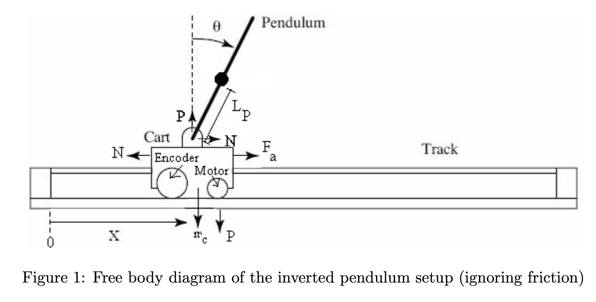
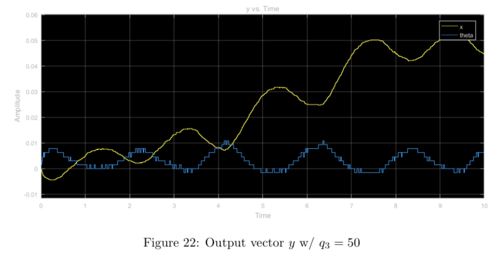

self-erecting inverted pendulum
This was the final project for EE128, Feedback Control, at UC Berkeley in Fall 2018. Group members were myself (Mia Mirkovic), Sukrit Arora, and Rafael Calleja.
Contents
overview
The objective of this project is to achieve simultaneous countrol of both the angular position of the pendulum and horizontal position of the cart on the track using full-state feedback. We will be considering small angle perturbations and sine wave reference tracking of the cart position. Note that the system is a SIMO - Single Input Multiple Output - system, since we are trying to control both the position of the cart and the angle of the pendulum by using only the motor voltage.
The final system comprises two different controllers: a swing-up controller (nonlinear) to swing the pendulum up to a vertical position from its initial dangling position and a stabilizing controller (linear) to maintain the pendulum in the vertical position. For the stabilizing controller, we will explore two different controller design techniques: traditional pole-placement controller design and LQR controller design. We use an "energy-pumping" method for the swing-up controller.
theory
The setup consists of a pendulum attached to the movable cart. The free body diagram of this setup is shown in Figure 1. We ignore friction and assume that the mass of the rod is uniformly distributed, e.g. its center of mass is located at the center of the rod, \(L_p = L/2\). N and P are the horizontal and vertical components, respectively, of the reaction force between the cart and the pendulum. The parameter values of the physical system are given in Table 1.

equations of motion
To begin, we derive the equations of motion for the system, considering the free-body diagrams of the cart and pendulum separately:
Under the small-angle approximation, \(\sin \theta \approx \theta\) and \(\cos \theta \approx 1\). In (1), \(F_a\) is the force exerted on the cart by the motor.
\[(M+m) \ddot{x} + mL_p \ddot{\theta} = F_a \mathrm{~~~~~~~~~~~~~~~~~~~(1)}\] \[mL_p \ddot{x} + \frac{4mL_p^2}{3}\ddot{\theta} - mgL_p\theta = 0 \mathrm{~~~~~~~~~(2)}\]
Solving for (1):
\(F_a - N = M\ddot{x}\)
\(N=m\ddot{x} + mL_p\ddot{\theta}\)
\(N-mL_p\ddot{\theta}\cos \theta = m \ddot{x}\)
\(N - mL_p\ddot{\theta} = m\ddot{x}\)
Solving for (2):
With \(I\ddot{\theta}\) as the sum of torques:
\(I = \frac{1}{3}m(2L_p)^2\)
\(I\ddot{\theta} = M_gL_P \sin \theta - ML_p\ddot{x}\)
\(\frac{4}{3}mL_p^2 + ML_p\ddot{x} - M_g L_p \sin \theta = 0\)
\(\frac{4}{3} mL_p^2 + ML_p\ddot{x} - M_gL_p \theta = 0\)
| System Parameters | ||
|---|---|---|
| Parameter | Value | Description |
| 439.6 counts/cm | Resolution of cart position encoder | |
| 651.9 counts/rad | Resolution of cart angle encoder | |
| \(m\) | 0.230 kg | Mass of pendulum |
| \(L_p\) | 0.3302 m | Pendulum distance from pivot to center of mass |
| \(I_c\) | \(m L_p^2 /3 \) | Moment of inertia of pendulum about its center |
| \(I_e\) | \(4m L_p^2 /3 \) | Moment of inertia of pendulum about its end |
| \(K_t\) | \(7.67 \cdot 10^{-3} N\cdot m/A\) | Motor torque constant |
| \(K_m\) | \(7.67 \cdot 10^{-3} V\cdot s/rad\) | Motor back EMF constant |
| \(K_v\) | 3.71 | Motor gearbox ratio |
| \(R_m\) | \(2.6 \Omega \) | Motor winding resistance |
| \(r\) | \(6.36 \cdot 10^{-3} m\) | Radius of motor gear |
| \(J_m\) | \(3.9 \cdot 10^{-7} kg\cdot m^2\) | Motor moment of inertia |
full dynamics of linearized system
Using the cart equation of motion \((m_cr^2R_m +K_g^2J_mR_m)\ddot{x} + (K_tK_mK_g^2)\dot{x} = (rK_gK_t)V\) derived from the standard DC motor armature circuit:With \(F_a = f(V,\dot{x}, \ddot{x})\) as the motor force:
\[(m_cr^2R_m +K_g^2J_mR_m)\ddot{x} + (K_tK_mK_g^2)\dot{x} = (rK_gK_t)V\] \[(m_c + \frac{K_g^2J_mR_m}{r^2R_m})\ddot{x} + (\frac{K_tK_mK_g^2}{r^2R_m})\dot{x} = (\frac{K_gK_t}{R_mr})V\] \[F_a + \frac{K_g^2J_mR_m}{r^2R_m}\ddot{x} + \frac{K_tK_mK_g^2}{r^2R_m}\dot{x} = (\frac{K_gK_t}{R_mr})V\] \[F_a = (\frac{K_gK_t}{R_mr})V - \frac{K_g^2J_mR_m}{r^2R_m}\ddot{x} - \frac{K_tK_mK_g^2}{r^2R_m}\dot{x}\] \[(M+m)\ddot{x} + mL_p\ddot{\theta} = (\frac{K_gK_t}{R_mr})V - \frac{K_g^2J_mR_m}{r^2R_m}\ddot{x} - \frac{K_tK_mK_g^2}{r^2R_m}\dot{x}\] \[mL_p\ddot{x} + \frac{4mL_p^2}{3}\ddot{\theta} - mgL_p\theta = 0\] \[\ddot{x} = -\frac{4}{3} L_p\ddot{\theta} + g\theta\] \[\ddot{\theta} = \frac{3}{4rL_p^2}(mgL_p\theta - mL_p\ddot{x}) = \frac{3}{4} (\frac{g}{L_p}\theta - \frac{1}{L_p}\ddot{x}) = \frac{3}{4L_p}(g\theta-\ddot{x})\]
| \(P\) | \[(M+m) + \frac{K_g^2J_mR_m}{r^2R_m}\] |
| \(Q\) | \[\frac{K_gK_t}{R_mr}\] |
| \(R\) | \[\frac{K_tK_mK_g^2}{r^2R_m}\] |
\[P\ddot{x} + mL_p\ddot{\theta} = QV-R\dot{x}\] \[P(g\theta - \frac{4}{3}L_p\ddot{\theta}) + mL_p\ddot{\theta} = QV-R\dot{x}\] \[Pg\theta + (mL_p-\frac{4}{3}PL_p)\ddot{\theta} = QV-R\dot{x}\] \[\ddot{\theta} = \frac{1}{L_p(m-\frac{4}{3}p)}[QV-R\dot{x} - Pg\theta]\] \[P\ddot{x}+\frac{3}{4}m(g\theta-\ddot{x}) = QV-R\dot{x}\] \[(P-\frac{3}{4}m)\ddot{x} + \frac{3}{4}mg\theta = QV-R\dot{x}\] \[\ddot{x} = \frac{1}{P-\frac{3}{4}m} [QV-R\dot{x} - \frac{3}{4}mg\theta]\]
| \(\ddot{x}\) | \[\frac{1}{P-\frac{3}{4}m} [QV-R\dot{x} - \frac{3}{4}mg\theta]\] |
| \(\ddot{\theta}\) | \[\ddot{\theta} = \frac{1}{L_p(m-\frac{4}{3}p)}[QV-R\dot{x} - Pg\theta]\] |
state-space representation
\[ \begin{bmatrix} \dot{x} \\ \ddot{x} \\ \dot{\theta} \\ \ddot{\theta} \end{bmatrix} = \begin{bmatrix} 0 & 1 & 0 & 0 \\ 0 & \frac{R}{P-\frac{3}{4}m} & \frac{3mg}{4(P-\frac{3}{4}m)} & 0 \\ 0 & 0 & 0 & 1 \\ 0 & -\frac{R}{L_p(m-\frac{4}{3}p)} & -\frac{Pg}{L_p(m-\frac{4}{3}p)} & 0 \end{bmatrix} \begin{bmatrix} x \\ \dot{x} \\ \theta \\ \dot{\theta} \end{bmatrix} + \begin{bmatrix} 0 \\ \frac{Q}{P-\frac{3}{4}m} \\ 0 \\ \frac{Q}{L_p(m-\frac{4}{3}P)} \end{bmatrix} V \] \[ \begin{bmatrix} \dot{x} \\ \dot{\theta} \\ \end{bmatrix} = \begin{bmatrix} 1 & 0 & 0 & 0 \\ 0 & 0 & 1 & 0 \\ \end{bmatrix} \begin{bmatrix} x \\ \dot{x} \\ \theta \\ \dot{\theta} \end{bmatrix} + 0\cdot V \]
The eigenvalues of the state matrix \(A\) are 0, -7.5505, -4.1275, and 4.8657, indicating that the open-loop system is not BIBO stable due to the presence of a pole in the right half-plane (RHP).
However, the rank of the system's controllability matrix \(C = \begin{bmatrix} B & AB & A^2B & A^3B \end{bmatrix}\) is 4, indicating that the system is controllable.
pole-placement controller design
We will use a full state-feedback controller to achieve the desired performance specifications. For the purpose of design, we assume that all the state variables are available for measurement and can use them for feedback (i.e. the entire state vector \(\mathbf{x}\) is known). The full-state feedback controller is \(u = -K\mathbf{x}\). The gain matrix \(K\) is chosen such that the closed-loop eigenvalues equal some desired values.
We would like our closed-loop eigenvalues to lie at \(s_{1,2} = -2.0 \pm 10j\) and \(s_{3,4} = -1.6 \pm 1.3j\).
Using the \(A\) and \(B\) matrices derived earlier, we can find the closed-loop system matrix \(A_K = A-BK\) and the feedback gain matrix \(K = \begin{bmatrix} k_1 & k_2 & k_3 & k_4 \end{bmatrix}\). Then, we compute the characteristic polynomial \(P(K,s) = \det(sI-A_K) \) of the closed-loop system and the desired characteristic polynomial \(P_{des}(s) = \prod^4_{i=-1} (s-s_i)\). From there, we can compute \(K\) using MATLAB:
With input \(u = K(\mathbf{r} - \mathbf{x}\), the dynamics of the closed-loop system are \(\dot{\mathbf{x}} = A \mathbf{x} + Bu = A_k \mathbf{x} + BK\mathbf{r}\), where \(\mathbf{r}\) is the reference input. Below is the Bode plot of this transfer function:
With a zero reference signal \([0 \, 0 \, 0 \, 0]^T\) and the pendulum starting from a vertical (balanced) position, we manuallly applied small perturbations to evaluate the pendulum's performance.
We see that the controller seems to overshoot quite a bit with any small perturbations. With any large perturbations, the controller fails completely and the system goes unbounded. The hardware continues to oscillate about the equilibrium point because our theta equilibrium is not stable. If we left the cart alone at equilibrium with no controller, theta would still change because of gravity, therefore we must compensate by moving our cart.
In order to see how well the calculated frequency response matches the actual system response, we used a sinusoidal reference signal \([M\sin\omega t \, 0 \, 0 \, 0]^T\) and frequencies of \(\omega = 1, 2, 5\) rad/s and \(M \approx 0.1\)m with the pendulum starting from vertical and calculated the gain and phase for each of the candidate frequencies from our frequency response (ignoring the offset from the hardware response) and compared them to our measured results below:
All plots for position should all have unity gain according to the bode plot, however there seems to be a small discrepancy in the \(\omega = 2,5\) plots. This can be explained by the velocity of the cart, and the stopping power of the physical system, which causes overshoot as seen in the plot.
Overall, the performance of the pole-placement controller leaves something to be desired. In order to execute the pole-placement design, we assumed that measurements of all system states were available. However, we do not actually have access to the full state: we only measure position \(x\) and angle \(\theta\), and estimate \(\dot{x}\) and \(\dot{\theta}\) using derivative blocks in Simulink. This is a poor-quality estimate of \(\dot{x}\) and \(\dot{\theta}\) since the derivative operation amplifies noise, which results in poor-quality control and grinding motors at high frequencies. We will thus correct this error by introducing a Luenberger observer.
luenberger observer design
The full system including the Luenberger observer can be written as: \[\dot{\hat{x}} = A\hat{x} + Bu + L(y-\hat{y})\] where \(y = Cx\) and \(\hat{y} = C\hat{x}\). The first two terms in the above equation, \(A\hat{x} + Bu\), can be called the predictor and is a replica of the plant dynamics. However, because of uncertainty or error in the plant model, the estimate of the state using only the predictor ("open-loop") will generally not match the actual state of the system. The corrective term \(L(y-\hat{y})\) is thus needed. Together, these form the Luenberger observer.
The \(L(y-\hat{y})\) term corrects future estimates of the state based on the present error in estimation. The gain matrix \(L\) can be considered a parameter which weighs the relative importance between the predictor and the corrector in state estimation. Intuitively, a low value for \(L\) is chosen when our confidence in the model (i.e. the predictor) is high and/or confidence in measurement y is low (i.e. when the measurements are noisy) and vice-versa for a high value of \(L\).
In order to improve the performance of our pole-placement controller, we will design the observer gain matrix \(L\) and use the state estimator for feedback control of the inverted-pendulum system instead of our previous derivative-based approximation. The Luenberger observer will provide a state estimate \(\hat{x}\), which we will use for state feedback \(u(t) = K(r(t)-\hat{x}(t))\).
The rank of the system's observability matrix \(O = \begin{bmatrix} C & CA & CA^2 & CA^3 \end{bmatrix}^T\) is 4, indicating that the system is observable.
The gain \(L\) is chosen such that the matrix \(A − LC\) has eigenvalues in the left half- plane. Further, the exact position of the eigenvalues of \(A − LC\) govern the rate at which the state estimate \(\hat{x}\) converges to the actual state \(x\) of the system. It is desirable that the observer estimate of the state converges to the actual state at least an order of magnitude faster than the system dynamics. This helps the controller obtain a good estimate of the actual state of the system in relatively short time so it can take appropriate control action.
We want to place the eigenvalues of the observer at \(-10 \pm 15j\) and \(-12 \pm 17j\). Using MATLAB, we find the observer gain L: \[\mathtt{L = place(A^T,C^T,poles)^T}\] \[ L = \begin{bmatrix} 16.1595 & -2.3767 \\ 254.978 & -5.4818 \\ 15.7136 & 21.0282 \\ 180.7734 & 378.1934 \end{bmatrix} \]
We implemented the observer in Simulink as shown below and simulated the system with 10cm position perturbation and 5 degrees angle perturbation as initial conditions, and found that the observer had estimation error \(e = \hat{x} - x\) of zero:
We then implemented the state feedback controller operating on the state estimate \(\hat{x}\) provided by the Luenberger observer on the hardware. In order to compare our results from the previous controller using derivatives to estimate velocity state with the current controller using the observer to estimate velocity state, we plotted the cart position and rod position for both controllers for a zero reference signal and a zero reference signal with small, manually applied perturbations.
The data demonstrate that the observer estimate is much smoother and less noisy than the derivative estimate. Comparing the plot above of cart and pendulum velocity from the observer with the plots of cart and pendulum velocity from the previous section (in which the derivative estimate was used), we see that the observer estimate is significantly less sensitive to noise, so we avoid the gear-grinding issue seen in the previous section by using the observer. We also see that \(\theta\) remains slightly closer to zero overall when using the observer when perturbations are present. Although both systems are functional at a baseline level, the observer system demonstrates greater insensitivity to noise overall and avoids damaging the system's gears.
Though the observer does help decrease the overcorrection seen in the pole-placement controller somewhat, the controller performance could still improve further if we designed a controller that takes into account the actuation effort needed to achieve control. If the actuation effort is minimized, we can decrease overcorrection as well. To do this, we designed a new controller using the Linear Quadratic Regulator (LQR) technique.
LQR controller design
Our pole-placement controller did not take actuation effort into account. Though good system regulation can be achieved by using a high amount of actuation effort (for example, in a proportional controller, higher \(K_p\) and thus greater actuation effort yields a faster rise time), we are limited by power and energy constraints. Ideally, we would like to achieve good system performance while at the same time minimizing the amount of actuation used. We can express this mathematically with a cost functional:
\[J = \int^\infty_0 (x^TQx + u^TRu )dt\]
where weighting matrices \(Q,R\) are design parameters.
The LQR design problem is to design a state-feedback controller K (i.e. for u = −Kx) such that the cost functional J is minimized. The cost functional consists of two terms, the first of which represents the cost of regulating the state x (regulatory term) and the second represents the cost of actuation u (actuation term). Each of these terms depend on a weighting matrix, Q and R, respectively. These matrices are the design parameters, assumed positive semidefinite. The regulatory term penalizes deviations from the desired state (here x = 0), while the actuation term penalizes actuation effort.
For simplicity, we assume the matrices \(Q,R\) are diagonal: \(Q = \mathrm{diag}(q_1, ..., q_n)\) and \(R = \mathrm{diag}(r_1, ..., r_m)\). Thus, the objective \(J\) reduces to \[J = \int^\infty_0 (\sum^n_{i=1} q_ix_i^2+\sum^m_{j=1} r_ju_j^2)dt\]
The scalars \(q_1, ..., q_n\) and \(r_1, ..., r_m\) can be seen as relative weights between different performance terms in the objective \(J\). For \(Q\) and \(R\) to be positive semidefinite, we need \(q_i \geq 0 \) and \(r_i \geq 0\) for all \(i\). The key design problem of LQR is to translate performance specifications in terms of the rise time, overshoot, bandwidth, etc. into relative weights of the above form. We did this iteratively in both simulation and experimentation, using MATLAB to solve the Algebraic Riccati Equation (ARE) to find the controller gains \(K\).
As a starting point, we assume the cart and the pendulum are \(x_0 = 30\) cm and \(\theta_0 = 0.05 \mathrm{~radians} (\approx 2.5 \mathrm{deg})\) displaced from their desired positions \(x_{des} = 0\) and \(\theta_{des} = 0\) at time \(t = 0\), and the objective is to get the system to the desired state as soon as possible, but without using more than 6 volts of input at any point in time. We set the scalars \(q_2\) and \(q_4\) to zero, as we have no inherent restriction on how \(\dot{x}\) and \(\dot{\theta}\) vary with time. Now, in order to use scalars \(q_1\), \(q_3\) and \(r\) as relative weights, we will normalize them based on their initial conditions. The modified weights are: \[ \bar{q_1} = \frac{q_1}{0.3^2} \mathrm{~~~~~} \bar{q_3} = \frac{q_3}{0.5^2} \mathrm{~~~~~} \bar{r} = \frac{r}{6^2} \mathrm{~~~~~} \] The weights have been normalized with square terms because the integrand of our objective functional \(J\) is a quadratic function of \(x\) and \(u\) (so the matrix Q will use \(\bar{q_1}\) and \(\bar{q_3}\), and \(R = \bar{r})\).
In order to determine how varying the relative magnitude of the weights affected the controller's performance, we found the gain matrix \(K\) that minimizes the objective function and the associated closed-loop pole locations for nominal weights \(q_1 = q_3 = r = 1\) and for a higher relative weight of each weight with all other weights nominal using the \(\mathtt{lqr}\) command in MATLAB. We then implemented these controllers in the physical system and observed its response. The step input used was \(\begin{bmatrix} 0.3 & 0 & 0 & 0 \end{bmatrix}^T\).
step input with nominal weights
step input with higher relative weight \(q_1\), other weights nominal
Increasing the \(q_1\) weight forced the \(x\) and \(\theta\) values to converge much faster than in the nominal weight case. The tradeoff for this convergence is the massive overshoot in the form of a large \(x\) differential caused by a large \(u\) input. Moreover, the system seemed to heavily enforce restricted movement of the cart as can be seen in the lower maximum amplitude (after convergence).
step input with higher relative weight \(q_3\), other weights nominal

Increasing the \(q_3\) weight and leaving the other weights nominal seems to have little effect shape-wise in comparison to the nominal case. When comparing all three plots (\(u, \hat{x}, y\), there is a noticeable amount of "noise-like" effects with regards to the nominal case. This is most likely due to the larger weight on the \(\theta\) value, which makes the system more sensitive to the minute changes in the pendulum's angle. Because this angle changes often and violently, the plots display this "noisy" effect. Compared to the simulation, the results from running the physical system seem to more prominently display this "noisy" property.
step input with higher relative weight \(r\), other weights nominal
Increasing the \(r\) weight while leaving the other weights nominal heavily restricts the input, \(u\), (ranging from -1.5 to 1.5 vs. -4 to 4) when compared with the nominal case. This, in turn bounds the state \(x\) as well as the output \(y\) to reasonable values without much tradeoff in overshoot or convergence time. Comparing the simulation with the physical experiment, we notice that the physical system never truly converges (as expected with an inverted pendulum) and also the \(y\) value doesn't diverge nearly as much due to the step-input in the physical system as it does in the prelab simulation.
sinusoidal input with higher relative weight \(q_3\), other weights nominal

Until this point, we thought that performing the LQR with \(q_3 >> q_1 = r\) seemed to be the best configuration for controlling the system. We now know that the better configuration weights the input (increases the \(r\) weight) to ensure that the input does not change as rapidly as shown in the plot below. The \(q_3\) configuration performs poorly in the case of the inverted pendulum as the pendulum angle changes frequently and violently causing "jerky" reactions in the system to compensate. The \(r\) configuration would most likely perform better (as seen in part 4) by limiting changes to the system propagating more smooth controls in both the \(x\) and \(\theta\) states as a result.
integration
We elected to use our LQR controller with weights \(q_1 = 10\), \(q_3 = 90\), \(r = 1\) as the balancing controller.
swing-up controller
We've already designed a controller to maintain the pendulum in a vertical position. Now, we need to design a controller to swing the pendulum into the vertical position: once the swing-up controller manages to position the pendulum almost upright, almost at rest, the balancing controller should take over and maintain the pendulum in a vertical state.
For the swing-up controller, we will use an energy-pumping method akin to the one used by K.J. Astrom and K. Furuta in "Swinging up a pendulum by energy control" in Automatica, 36(2):287-295, 2000. The idea is to use the control input to inject into the system the right amount of mechanical energy which will bring the pendulum to the upright position.
The total mechanical energy of the pendulum (without the cart) \(E(\theta,\dot{\theta})\) such that the total energy is zero when the pendulum is at rest in the upright position, i.e., \(E(0,0) = 0\), is given by: \[ E(\theta,\dot{\theta}) = \frac{1}{2} J + mgL_p(\cos \pi -1) \]
This indicates that the energy \(E(\pi,0)\) of the pendulum at rest hanging downward is \(-2mgL_p\) and the derivative of the total energy of the pendulum is \(-mL_p\ddot{x}\dot{\theta}\cos(\theta)\), where \(\ddot{x}\) is the acceleration of the pendulum's pivot point. Therefore, to increase the energy of the system as fast as possible, we would like to apply maximal positive acceleration when \(\dot{\theta}\cos(\theta) < 0\), and maximal negative acceleration when \(\dot{\theta}\cos(\theta) > 0\). The relation between acceleration and voltage applied to the cart motor is given by
\[ \ddot{x} = \alpha V - \beta \dot{x} - \gamma \theta \]
from standard DC motor dynamics, where \(\alpha > 0\), \(\beta\), and \(\gamma\) are constants depending on the physical parameters of the system. From this relationship, we observe \(\ddot{x}\) is maximal when V is maximal. This results in the following bang-bang control policy: \[ V = \begin{cases} 0 & \mathrm{when~} E(\theta,\dot{\theta}) \geq 0 \\ V_{max} & \mathrm{when~} E(\theta,\dot{\theta}) < 0 \mathrm{~and~} \dot{\theta}\cos\theta < 0 \\ -V_{max} & \mathrm{when~} E(\theta,\dot{\theta}) < 0 \mathrm{~and~} \dot{\theta}\cos\theta > 0 \end{cases} \]
where \(V_{max} = 6V\).
obtaining derivatives
Since numerical derivatives of position and angle are of poor quality, we built an observer to remedy this issue for the balancing controller. However, this observer uses the linear system model, and is therefore only valid for \(\theta \approx 0\). This will not work for the swing-up controller since we are using the full range \(\theta \in [0,2\pi)\), so in order to take the nonlinearity of the system into account, we will instead use a dynamical system approximating a derivative for obtaining estimates of \(\dot{x}\) and \(\dot{\theta}\).
The derivative operation \(\dot{x}(t)\) with zero initial conditions is \(sX(s)\) in the Laplace domain. Since we cannot implement a pure differentiator with transfer function \(G(s) = s\) in MATLAB, we will approximate it by the transfer function \[ D(s) = sH_{lp}(s) = s\frac{1}{c_{lp}s +1}\]
with parameter \(c_{lp}\) (lp for low-pass). This represents a differentiatior combines with a low-pass filter. However, multiplying by the low-pass filter results in a phase shift. We need to design this low-pass/differentiator to keep the phase shift small without overly attenuating the frequencies of interest. To do so, we found the largest value of \(c_{lp}\) such that the phase shift at the natural frequency \(\omega_0 = \sqrt{\frac{g}{l}}\) is less than or equal to 5 degrees:
\(H(s) = \frac{s}{c_{lp}s + 1}\)
\(\omega_0 = \sqrt{\frac{g}{l}} = \sqrt{\frac{9.8}{0.6609}} = 3.85\)
\(\angle H(j\omega) = |-\tan^{-1}(c_{lp}\omega_0)| \leq 5\)
\(c_{lp}\omega_0 \leq \tan(5)\)
\(c_{lp} \leq \frac{\tan(5)}{\omega_0}\)
\(c_{lp}=0.0227\)
implementing the swing-up controller on the hardware
The interface to the pendulum hardware is shown in Figure 29. We use the dynamical system described in the previous section to obtain estimates of \(\dot{x}\) and \(\dot{\theta}\) in the "Derivative_x" and "Derivative_theta" blocks. The "Angle Initialization" block (shown in detail in Figure 30) is used to transform the coordinates of the system such that \(\theta = 0\) in the "up" position by performing the transformation \(\theta =\mathrm{mod}(\theta', 2\pi) - \pi\), where \(\theta'\) is the angle reading from the encoder after the conversion factor. This is necessary so that the angle does not continuously increase, preventing the controller from forcing the pendulum to make an equal number of clockwise and counterclockwise full rotations.
The mode selector block is shown in Figure 31. In this block we check whether the absolute value of \(\theta\) is less than some threshold \(\mathtt{thresh}\) and choose the value of the mode signal accordingly. In particular, we want the following behavior: \[\mathrm{mode} = \begin{cases} 1 & \mathrm{if ~} \lvert \theta \rvert \leq \mathtt{thresh} \\ -1 & \mathrm{otherwise} \end{cases} \]
The mode signal is used to switch between Swing-Up and stabilizing controller, and also to switch to using the state estimate \(\hat{x}(t)\) provided by the observer for the stabilizing control. We elected to use \(\mathtt{thresh} = 15\) degrees.
We tuned our swing-up controller (Figure 32) by weighting the first term in our energy function by 0.8 to better estimate the accumulated energy by taking into account frictional losses. We tuned the proportional gain \(\mathtt{kpump}\) to the minimum value that saturated most inputs in order to avoid oversensitivity to small changes in energy, as having too high a gain caused the cart to make small lateral shifts out of phase with the pendulum's motion that prevented it from gaining adequate energy. The leftmost switch allows the cart to move to the right with the maximum amount of force applied for the first 50 ms before switching to using the swing-up controller to allow all parts of the system to properly initialize before applying control. The final switch makes the system stop increasing the pendulum energy as soon as it is greater than or equal to zero.
implementing the balancing controller on the hardware
The delay after the mode selector ensures the mode switches at the correct timestep, as the mode selector value is calculated before the current cycle completes and may cause the system to switch from swing-up to vertical before the observed state is fed back into the system.
Figure 34 shows the observer subsystem. The switching part (on the left of the figure) is necessary to ensure that the observer is only in use when the linearization of the system is reasonably accurate (i.e. when the mode signal is non-negative, which is the case whenever \( \lvert \theta \rvert \leq \mathtt{thresh}\). If \( \lvert \theta \rvert > \mathtt{thresh}\), the observer is provided with zero voltage input signal, \(V = 0\), and zero output signal, \(y = [0 \mathrm{~} 0]^T \). As soon as mode = 1, i.e. when \( \lvert \theta \rvert \leq \mathtt{thresh}\), the observer is provided with the true inputs V and the true system output y. Note that this will force the observer state \(\hat{x}\) to converge to zero whenever the pendulum is not near its upright position (this ensures that the observer is only used when the linearized model is valid). When the pendulum gets close to the upright position \((\theta \approx 0)\), then the observer will converge quickly to the true state \(x\). The main point here is that if the observer were to run the whole time, the estimate \(\hat{x}\) might diverge since the linear model used in the observer is not a good approximation anymore.
results
The plots below show the data collected for the run shown in the video.
The video shows that the pendulum swings in circles a few times before settling upright for \(\mathtt{thresh} = 15\) degrees. This may be fixed by increasing the angle threshold so that the system switches to the vertical controller sooner.